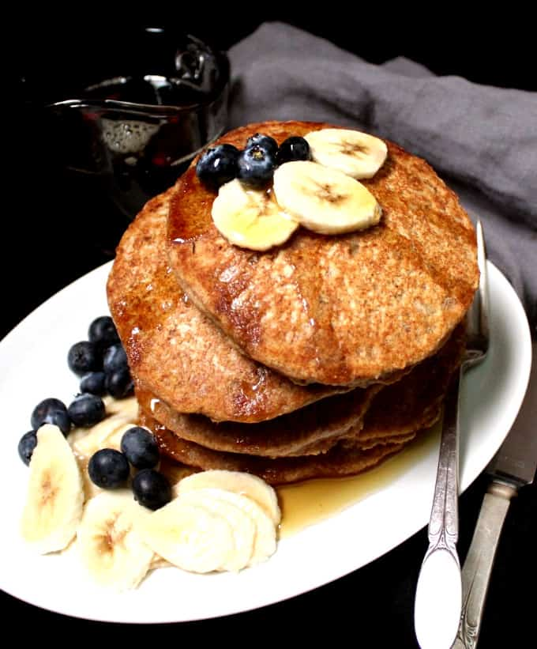

Back to Odin Recipes Homepage
Isn't it time for Breakfast already? Then let's have Whole Wheat Pancackes!

Description
Looking for a change from your usual diet? Well then, let's try out a vegan lasagna, shall we? This bad boy will taste exactly like a traditional one, but it is meatless and dairy-free.
"Healthy Pancakes" sounds like an oxymoron? Let's be honest, even so, they are irresistable, and this recipe is the proof confirming both.
They are fluffy, tender and come together so quickly. You need just over 5 minutes to put the batter together and minutes later they are ready to be served.
Serve them with a pat of vegan butter and mable syrup, or top them with fruits and vegan lemon curd, the options are endless!
Equipment
Ingredients
- Whole wheat pastry flour, 1 ½ cups. or a mix of regular whole wheat flour and all purposes flour. Try using all whole wheat pastry flour because it gives you tremendous flavor and nutrition
- Exsqueeze me, a Baking Powder? 1 ½ teaspoons
- Baking Soda, 1 ½ tablespoons
- Salt, ¼ teaspoon
- Non-Dairy Milk, 1 ½ cups. Almond is among my favourites, Oat, Soy, Cashew are all fine here
- Apple Cider Vinegar, 2 tablespoons. Helps create a "buttermilk" effect in the pancakes, making them light and fluffy
- Flaxmeal, 2 tablespoons. Adds more heart-healthy fiber and nutrition and is a great replacement for eggs in this recipe
- Maple Syrup, or any other vegan sweetener, including sugar and agave, are fine. 2 tablespoons
- Pure Vanilla Extract, 2 teaspoon. Optional to add more flavour
- Water, 6 teaspoons
Steps - How to make it
- In a bowl, whisk together the flour, baking powder, baking soda and salt.
- In a another bowl, add the nondairy milk and apple cider vinegar. Let it stand for a couple of minutes, then add the flax meal and water and whisk well. Add the maple syrup and vanilla extract and mix.
- Add the wet ingredients to the dry mix with a spatula or the whisk until everything just comes together. The batter should still be lumpy but you shouldn't have any obvious patches of dry flour.
- Heat a nonstick or cast-iron griddle, then pray with cooking spray or coat lightly with oil. Then
- Using a ⅓rd cup measure, scoop up the batter and pour on the hot griddle.
- Cook until bubbles appear at the top of the pancake and the underside is golden-brown.
- Flip over and cook the other side until it is lightly browned as well.
- Serve hot with fruits and maple syrup, or other toppings of your choice!
Original recipe by Vaishali can be found at Holy Cow Vegan